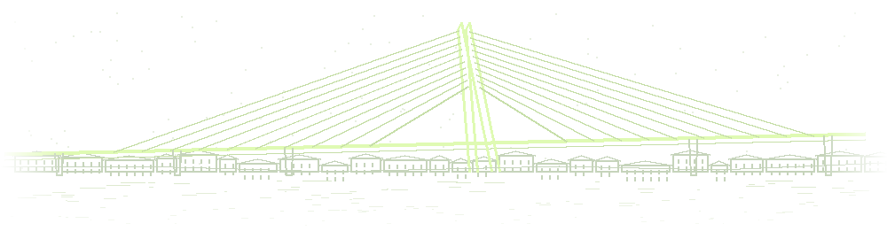
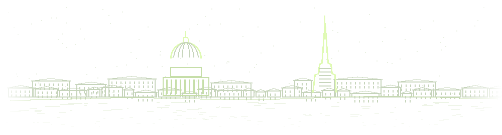
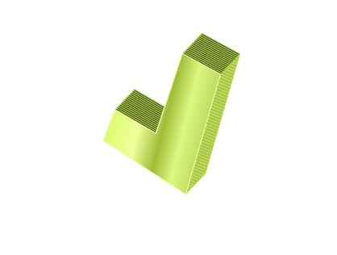
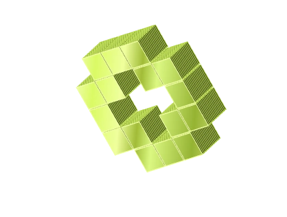

CaloTrack
A web application for tracking calories and nutrition.
HTML · CSS · JavaScript
I build web apps in Cherepovets. Right now I’m working on Nearlee, a Telegram mini app.
I study Information Systems and Programming at Cherepovets Chemical-Technological College.
CCTC on VK
I’d like to continue my studies at the University of Aerospace Instrumentation and work toward a career in software engineering.
SUAI website
A web application for tracking calories and nutrition.
A Telegram mini app for finding people and meetups nearby.
A storefront built for an acquaintance. Customers put together an order and the shop receives it by email.

My first website. A task manager with timers, priorities, categories, filters, themes and local storage.

An early AutoHotkey experiment in pixel colour detection. I removed the repository for legal reasons.